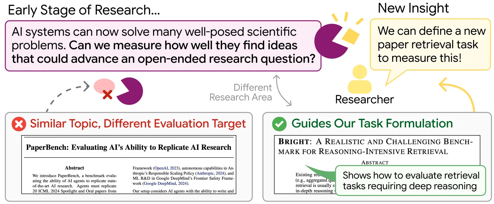
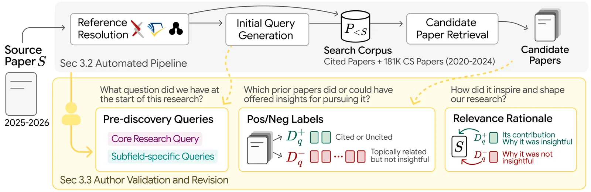
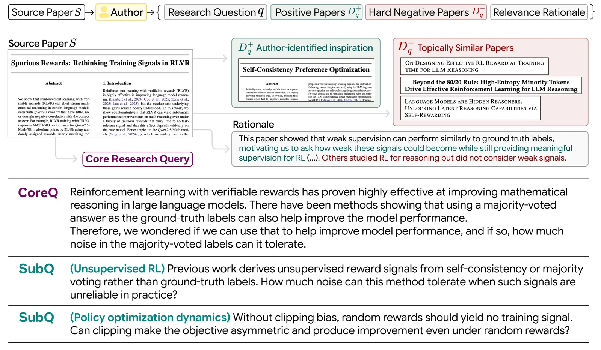
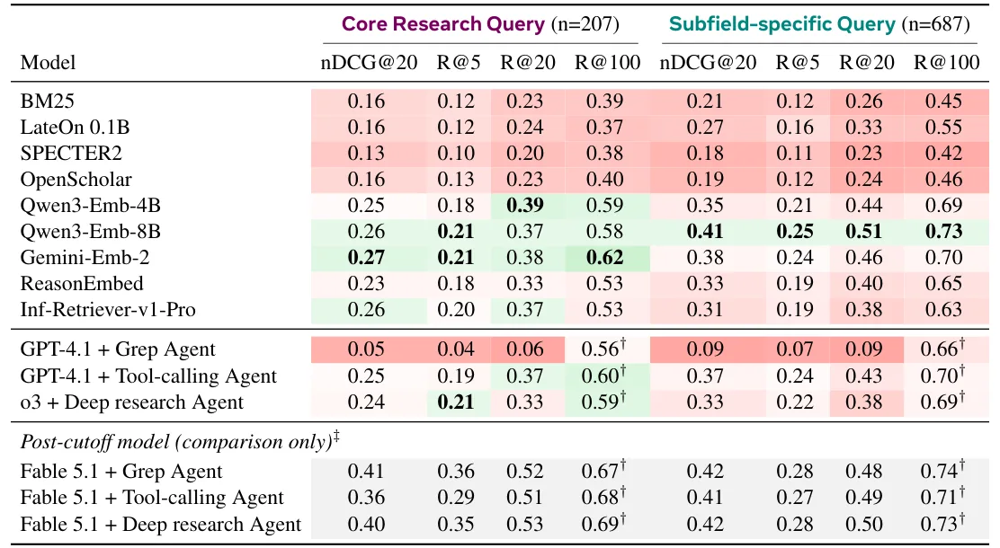

O problema invisível da inspiração científica
Pesquisa científica é cumulativa: cada projeto se apoia em resultados e ideias anteriores. Mas existe uma habilidade que separa cientistas excepcionais dos demais: saber qual trabalho anterior, perdido em um arquivo cada vez maior de publicações, uma nova pergunta precisa para avançar. Sistemas de IA atuais aceleram progresso em subproblemas bem definidos, mas decidir em qual ideia existente um novo problema deve se apoiar ainda é tarefa quase exclusivamente humana.
Um paper anterior perspicaz pode transformar uma pergunta vaga em um problema bem definido—revelando uma limitação que motiva uma nova direção ou sugerindo uma abordagem que vale adaptar. Essa escolha é parte do que pesquisadores chamam de research taste, o gosto ou intuição para pesquisa. O ScholarCatalyst pergunta se modelos de linguagem conseguem fazer essa escolha através de uma tarefa concreta: dada uma pergunta de pesquisa em estágio inicial, encontre seus catalyst papers—trabalhos cujas ideias avançaram ou poderiam ter avançado o projeto de forma significativa.
O desafio é que avaliar essa tarefa de recuperação exige saber quais papers foram catalisadores para um projeto específico. Papers publicados registram resultados de projetos completos, mas a ideação que os moldou fica largamente não documentada. Bibliografias raramente distinguem as fontes que forneceram insights críticos e não óbvios do conjunto mais amplo de trabalhos citados. Benchmarks existentes de recuperação científica avaliam similaridade em nível de faceta ou relevância para uma necessidade de informação declarada, mas não capturam se um paper recuperado poderia ter inspirado um projeto em estágio inicial—especialmente quando não foi citado no paper final.

Como o benchmark foi construído
O ScholarCatalyst é fundamentado no conhecimento em primeira mão de pesquisadores sobre seus próprios projetos. 184 pesquisadores que lideraram 207 projetos recentes de ciência da computação verificaram 894 perguntas de pesquisa como elas existiam antes das descobertas-chave de cada projeto. Depois rotularam quais papers anteriores avançaram ou poderiam ter avançado seu trabalho e explicaram por quê—incluindo papers que não haviam encontrado na época.
Dada uma pergunta, um sistema precisa ranquear esses papers perto do topo de um corpus de 191 mil papers, restrito a trabalhos publicados antes do projeto começar. Os modelos usados têm knowledge cutoffs que antecedem todos os source papers—os trabalhos finais dos autores. Esse conhecimento raramente está documentado, e os autores o coletam de forma eficiente e em escala através de um pipeline automatizado que só precisa do arXiv ID de um paper para produzir dados preliminares que os autores podem revisar.
O pipeline funciona assim: extrai metadados estruturados do paper (título, abstract, seções), identifica a data de início do projeto, constrói um corpus de candidatos publicados antes dessa data, e gera perguntas de pesquisa preliminares em dois níveis de granularidade. CoreQ captura a pergunta central do projeto inteiro; SubQ captura perguntas de subproblemas específicos dentro do trabalho. Os autores então validam e revisam essas perguntas através de uma interface, julgam quais papers candidatos são positivos (avançaram o projeto), negativos difíceis (relacionados mas não úteis), ou irrelevantes.

Anatomia de uma instância do benchmark
Cada instância do ScholarCatalyst contém uma pergunta de pesquisa q (CoreQ ou SubQ), um conjunto de papers positivos D+ identificados pelo autor como catalisadores, e hard negatives—papers relacionados mas que o autor explicitamente julgou não terem avançado o projeto. O corpus de busca contém apenas trabalhos publicados antes da data de início do projeto fonte.
Por exemplo, um autor trabalhando em raciocínio visual para modelos de linguagem pode ter como CoreQ: 'Como podemos melhorar a capacidade de modelos de linguagem de raciocinar sobre imagens?' Papers positivos podem incluir trabalhos sobre chain-of-thought prompting (técnica, não contexto visual), datasets de VQA que revelaram limitações específicas (evidência empírica), ou até métodos de outras áreas adaptáveis ao problema. Hard negatives seriam papers sobre visão computacional topicamente similares mas sem insights transferíveis para o projeto específico.
O que torna um paper um catalisador? Pedindo a um LLM judge para classificar 663 rationales de key-inspiration sob uma taxonomia de nove tipos, os autores encontraram que pesquisadores mais frequentemente creditam: uma técnica que adaptaram (method), achados empíricos que apoiaram uma direção (evidence), uma ideia estendida para novo contexto (generalization), ou uma limitação que motivou nova abordagem (limitation). Mais de uma categoria se aplica a 55.8% dos rationales.

O que os sistemas atuais conseguem—e não conseguem
Os autores testaram retrievers esparsos (BM25), densos (embeddings), multi-vetor (ColBERTv2), e agentes de busca com LLMs. O sistema mais forte recupera apenas 48% dos papers positivos no top-20 (Recall@20). Esse sistema é o Qwen3-Embedding-8B, um retriever denso de embeddings. Agentes que fazem busca iterativa com ferramentas—incluindo o mesmo retriever de embeddings—não melhoram: alcançam 0.42 de R@20 contra 0.48 do retriever sozinho.
Por que agentes não ajudam? Porque cada busca que um agente emite ainda passa por um retriever baseado em similaridade. Repetir queries não resolve o problema fundamental: os papers úteis não entram no pool de candidatos porque não são topicamente similares. Os autores testaram também Claude Fable 5.1 como referência leniente—esse modelo pode ter visto os source papers ou fontes secundárias sobre eles durante treinamento. Mesmo com essa vantagem, erra quase metade dos papers positivos no top-20, alcançando apenas 0.51 de R@20.
Técnicas de query expansion também falham. Single-query expansion (expandir a query original) melhora CoreQ em 0.04 mas piora SubQ em 0.05. Multi-query generation (gerar múltiplas queries) e HyDE (gerar documentos hipotéticos) pioram o desempenho em ambos os tipos de query, com HyDE caindo até 0.22 pontos em R@20. A razão é que essas técnicas amplificam viés de similaridade tópica, que não é o sinal certo para identificar catalisadores.

Por que o registro publicado não resolve o problema
Citações no paper fonte fornecem sinal incompleto de inspiração. 43.6% dos positivos de SubQ não são citados pelo source paper, e 67.8% desses não compartilham nenhuma referência com ele. Entre papers citados, rótulos de citation intent não identificam inspirações: apenas 46.2% dos positivos CoreQ e 34.0% dos SubQ carregam label de 'uses' ou 'extends'.
Mesmo dado o source paper completo mais sua bibliografia, LLMs falham em identificar catalyst papers. Gemini 3.1 Pro propõe candidatos que cobrem apenas 32.2% dos positivos CoreQ em média, e não encontra nenhuma key inspiration em 28.0% das instâncias. Isso mostra que a informação sobre quais papers inspiraram um projeto não está recuperável do registro publicado—precisa vir dos próprios autores.
Esse gap entre citações e inspiração tem implicações práticas: 49.5% dos papers que autores creditam vêm de fora da área do projeto, e 43.6% dos positivos específicos de subárea nunca foram citados no source paper. Pesquisadores podem estar limitados mais pelo que viram do que por quão bem julgam o que veem. O ScholarCatalyst documenta esse conhecimento tácito que de outra forma se perderia.
O que ajuda—e o que não ajuda—agentes de busca
Os autores variaram dois tipos de contexto para agentes: informação sobre o source paper e quanto de cada paper recuperado o agente lê. Com um agente Gemini 3.7 Flash (cutoff março 2026) usando tool-calling em 203 queries, o título e abstract do source aumentam R@20 em 0.11 para CoreQ e 0.02 para SubQ. Web search muda no máximo 0.01. A bibliografia do source, que contém 95% dos papers positivos CoreQ, aumenta em 0.35.
Mas sem ferramentas de busca, o modelo dado apenas título e abstract alcança só 0.31 de CoreQ R@20—abaixo da busca no corpus sozinha. Isso significa que contexto do source ajuda guiando a busca, não através de memória do modelo. Deixar um agente GPT-4.1 ler além de abstracts em 50 queries por tipo muda R@20 em no máximo 0.01—ler mais não ajuda se os papers certos não estão no pool.
Rerankers mais fortes se beneficiam mais de melhor cobertura de candidatos. Aplicando reranking baseado em LLM aos top-K candidatos de Gemini-Embedding-2 em 100 queries, os autores compararam com e sem gold injection—substituir candidatos negativos por papers positivos que faltavam, mantendo tamanho do pool fixo. Rerankers mais fortes ganham mais em R@5 com gold injection. O gap crescente sugere que cobertura de candidatos limita quanto podemos nos beneficiar de rerankers melhores: sua capacidade de selecionar papers úteis só importa quando esses papers entram no pool.
Implicações e próximos passos
Os resultados apontam para a necessidade de novas receitas de treinamento que equipem modelos com intuição de especialista para buscar em corpora amplos. Trabalho recente sobre reasoning-intensive retrieval avalia relações de relevância que exigem raciocínio para reconhecer. O ScholarCatalyst vai além, exigindo julgamentos de como ideias anteriores poderiam avançar um projeto de pesquisa.
Os autores veem dois marcos à frente. O primeiro é recuperação em nível de especialista: igualar o julgamento de um expert de domínio dentro de seu próprio campo. O segundo é recuperação além de qualquer expert individual: exercer esse nível de intuição através de uma amplitude de campos que nenhum pesquisador consegue acompanhar sozinho. Essa amplitude pode ser onde tais sistemas mais ajudam, já que quase metade dos papers que autores creditam vem de fora da área do projeto.
O que está entre sistemas atuais e ambos os marcos é um senso em nível de especialista de quais ideias importam. Se conhecimento público não descoberto—conexões úteis escondidas na literatura existente—é tão comum quanto os resultados implicam, modelos capazes de julgamento de expert através de campos poderiam desbloquear um grande backlog de progresso escondido à vista de todos. O Semantic Scholar sozinho indexa mais de 225 milhões de papers, comparado com 190 mil no corpus do benchmark.
Como qualquer paper recém-publicado pode se tornar uma instância nova, o pipeline mantém o ScholarCatalyst à frente dos cutoffs de treinamento de modelos e permite que o benchmark cresça com a literatura. Isso é crítico: benchmarks estáticos rapidamente se tornam parte dos dados de treinamento, e medir progresso real exige exemplos que os modelos não viram.
O que fica
- Agentes de busca com LLMs (R@20=0.42) não superam retrievers de embedding sozinhos (0.48) porque papers inspiradores não são topicamente similares às queries iniciais.
- 43.6% dos papers que autores creditam como catalisadores não foram citados no trabalho final—o registro publicado não documenta o que inspirou a pesquisa.
- Mesmo Claude Fable 5.1, que pode ter visto os source papers no treinamento, erra metade dos papers positivos no top-20, mostrando a dificuldade da tarefa.
- O benchmark usa pipeline automatizado que cresce com a literatura e mantém exemplos fora dos cutoffs de treinamento, permitindo medição contínua de progresso.
Paper original: ScholarCatalyst: A Benchmark for Retrieving Papers That Inspire New Research
Comentários
Nenhum comentário ainda. Seja o primeiro.